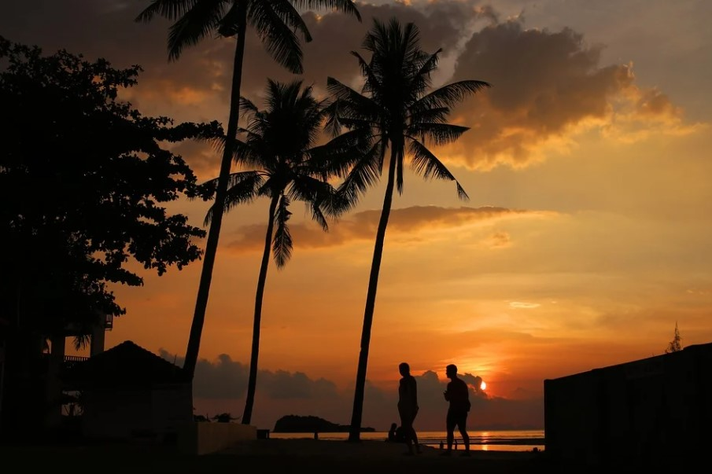

Hi! My Name is Nina Murat. I was born and raised in France. I lived in Toulouse for 17 years before coming to Paris to continue my education at ESSEC. However, I was able to visit many places around the world throughout my vacation such as Thailand and Greece. I really like to travel, discover new places, new cultures ✈. I currently live in Cergy, where I am doing the BBA (Bachelor of Business Administration) at ESSEC Business School
I am a person who likes to discover new things, so it is quite natural that each year, I register for a new activity in order to acquire knowledge and skills in several areas. From an early age, my parents took me to circus, bike, many hikes and walks. I was then able to experience mountain sports such as climbing, via-ferrata, caving. I was also able to do many individual sports such as combat sports (Judo, Krav-maga), swimming and gymnastics. But also, several sports which can be individual but also collective in particular any kind of dance: classical, jazz, hip-hop, contemporary or even synchronized swimming. Finally, I did some team sports like handball.
Sportingly, I have been very active since I was little, but another area remained for many years: singing. I did not yet know how to chew that I was singing. This passion has grown over the years. I took classes, then joined my college choir. Thanks to this choir, I had many opportunities for shows and concerts but above all, I was able to sing, alongside the choir and the orchestra of the Capitole in Toulouse at the Halle aux Grains, a cantata by Carl Orff : Carmina Burana.
One of my passions: traveling. I like to discover new cultures, meet new people, discover traditional dishes and traditions, etc. I think traveling is not only fun, but also educational and important. Indeed, traveling allows us to learn new languages, customs, etc. and this encourages us to accept and understand others and allows us to discover the world from a new perspective.
On the other hand, traveling promotes an open mind. The world appears to us in another way, we see that there is not just one way of living and being happy but 1000 different ones, we encounter states of mind so different from ours that sometimes we put all our life in question. All this allows us to grow and mature as well as to accept these differences and even see that it is these differences that make our world so beautiful.
More personally, I've been to a lot of places, but the one I've been to most often is Spain, where I've been going every year since I was little. I love going to Spain because there are many different and beautiful landscapes, moreover, the mentality of the Spaniards is incredible, they are very kind and open. My favorite place there is Majorca. On the other hand, other countries like Thailand and Morocco made me feel more out of place which made the experiences even more amazing. Later, I would like to take a tour of the United States, Canada, etc. but my biggest dream is to go to Peru to see Machu Picchu.
MAJORCA, SPAIN
KOH LANTA, THAILAND
Great gourmand, I like to eat diversified and above all, I like when it's homemade. No longer living with my parents, I can no longer ask them to make dishes and desserts for me or at least to help me. So I've been making different and elaborate dishes for almost a year, looking for recipes and trying my own experiences.
In the end, I acquired knowledge and skills in this area. I have also developed reflexes that help me every day.
What could be better on a rainy Sunday than getting under your duvet in front of a good series? I really like watching series and movies or reading a good book. Generally, I particularly appreciate post-apocalyptic stories where the world is completely revisited. The laws change, mentalities too and the characters survive more than they live. I like to imagine myself in the place of these characters and think about how I would act in these conditions, what would be my first reflexes?
Here are some examples of series and films that I particularly liked: Hunger Games, The 100, Divergent, The Handmaid's Tale,... On the other hand, here are some books that have marked me a lot: All The Bright places, Hunger Games (again and always), Gone, The here and now, Le combat d'hiver,...